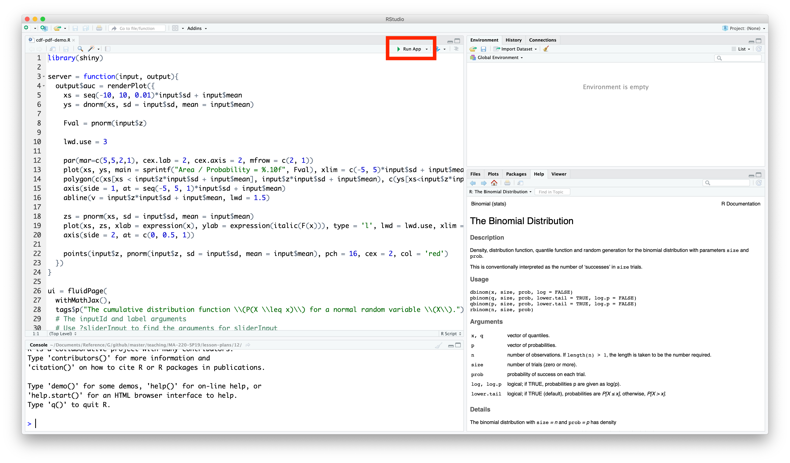

Shiny is an R package that facilitates the development of interactive applications written in R. Throughout the rest of the semester, I will share several Shiny apps with you that I hope will help develop your understanding of various probabilistic and statistical concepts.
To run a Shiny app, download the R script to your computer, and open the R script in RStudio. Then click the "Run App" button (a green play button) in the top-right corner of Source Pane. This will launch the Shiny app in RStudio.
